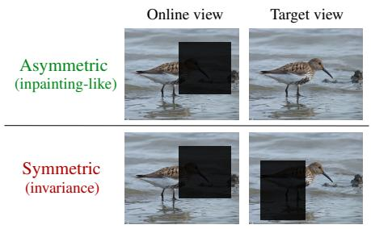

Self-Supervised Learning with a Multi-Task Latent Space Objective Pierre-Francois De Plaen, Abhishek Jha, Luc Van Gool, Tinne Tuytelaars, Marc Proesmans；机构信息未在 arXiv 元数据中列出。 arXiv 更新 原文链接
(b) Multi-predictor multi-crop (ours, Sec(b) Multi-predictor multi-crop (ours, Sec. 3.2). (c) Multi-task (ours, Sec. 3.3). Figure 1: Overview of the proposed framework. Naive multi-crop (left) forces a single predictor to solve heterogeneous latent-space tasks simultaneously, leading to unstable optimization. Assigning one predictor per view type (middle) resolves this interference and stabilizes training. Introducing asymmetric cutout views (right) adds a complementary semantic inpainting task, further improving downstream performance. Here, p. denotes a predictor, and colors indicate distinct predictors.这张图概括 Self-Supervised Learning with a Multi-Task 的整体方法流程。阅读时先看模块之间传递的训练信号，再看作者如何把目标拆成可优化的子问题。

Figureure 2 · : Asymmetric and symmetric cutoutFigure 2: Asymmetric and symmetric cutout. Image from ImageNet val. set (№7011).这张图来自论文 PDF 的结构化抽取。当前用于辅助理解 Self-Supervised Learning with a Multi-Task 的方法或实验，请结合正文精读段落一起看。